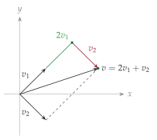
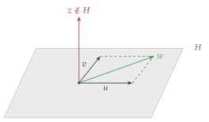

Parcial 1 · Espacios vectoriales, bases y dimensión
Para arrancarUn GPS te ubica con 3 números, nunca con 2 ni con 4. ¿Por qué el espacio «tiene» 3 dimensiones y no depende de quién lo mida? El teorema de este capítulo dice que todas las bases tienen el mismo tamaño.
En los capítulos anteriores aprendimos a describir un subespacio como el espacio generado por un conjunto de vectores, y a reconocer cuándo un conjunto es linealmente independiente. Ambas nociones pesan en direcciones opuestas: para generar hacen falta muchos vectores, y para ser independiente hacen falta pocos. Un conjunto que logra las dos cosas a la vez —generar todo el espacio sin tener ningún vector sobrante— es el objeto central de este capítulo: una base. Veremos que una base permite describir cada vector del espacio de una única manera, que todas las bases de un mismo espacio tienen la misma cantidad de vectores, y que ese número, la dimensión, mide de modo preciso «qué tan grande» es el espacio.
La condición (a) dice que B no tiene vectores de sobra: ninguno de ellos puede escribirse como combinación lineal de los demás. La condición (b) dice que B tiene vectores suficientes para alcanzar todo V. Una base es, por así decirlo, un generador económico: el más pequeño posible. En este libro, cuando hablemos de una base {v1,…,vn} la consideraremos con ese orden, pues así lo exigirán las coordenadas del capítulo siguiente.
Para comprobar que un conjunto es base hay que verificar, entonces, las dos condiciones por separado. Empecemos por los ejemplos que sirven de modelo a todos los demás: las bases canónicas de los espacios que conocemos.
Muestra que B={(1,0,0),(0,1,0),(0,0,1)}={e1,e2,e3} es una base de R3.
Soluciónintenta primero
B genera a R3. Sea (x,y,z)∈R3 arbitrario. Entonces (x,y,z)=x(1,0,0)+y(0,1,0)+z(0,0,1), de modo que todo vector de R3 es combinación lineal de e1,e2,e3.
B es L.I. Supongamos que αe1+βe2+θe3=(0,0,0). El lado izquierdo es el vector (α,β,θ), así que la igualdad se lee (α,β,θ)=(0,0,0), es decir, α=0, β=0, θ=0. La única combinación que da el vector cero es la trivial.
Como se cumplen (a) y (b), B es una base de R3.
El mismo argumento funciona en cualquier dimensión; basta cambiar tres coordenadas por n.
Sean e1=10⋮0,e2=01⋮0,…,en=00⋮1, donde ei tiene un 1 en la posición i y ceros en las demás. Muestra que {e1,…,en} es una base de Rn.
Soluciónintenta primero
Genera. Si x=(x1,…,xn)∈Rn, entonces, sumando componente a componente, x=x1e1+x2e2+⋯+xnen, pues la componente i del lado derecho es xi⋅1 (las demás contribuciones valen 0).
Es L.I. Si c1e1+⋯+cnen=0, la componente i de la combinación es ci; luego ci=0 para i=1,…,n.
No toda base es canónica. Un mismo espacio tiene infinitas bases; la canónica es simplemente la más cómoda.
Muestra que B={v1,v2}={(1,1),(1,−1)} es una base de R2.
Soluciónintenta primero
Genera. Dado (x,y)∈R2 buscamos a,b con a(1,1)+b(1,−1)=(x,y), es decir, el sistema (111−1xy)F2→F2−F1(101−2xy−x)F2→−21F2(1011x2x−y). Sustituyendo hacia atrás, b=2x−y y a=x−b=2x+y. El sistema tiene solución para cualquier (x,y); por tanto, (x,y)=2x+yv1+2x−yv2 y B genera a R2.
Es L.I. Es el caso (x,y)=(0,0) del cálculo anterior: a=b=0 es la única solución de av1+bv2=0.
Luego B es una base de R2.
Pasemos ahora a los espacios de polinomios y de matrices. Aquí el papel de ei lo juegan las potencias de x y las matrices con un único uno.
Muestra que B={1,x,x2,…,xn} es una base del espacio Pn de los polinomios de grado a lo sumo n. En particular, {1,x,x2,x3} es base de P3.
Soluciónintenta primero
Genera. Un polinomio cualquiera de Pn es, por definición, p(x)=a0+a1x+⋯+anxn=a0⋅1+a1x+⋯+anxn, que ya es una combinación lineal de 1,x,…,xn. Para n=3: p(x)=a0⋅1+a1x+a2x2+a3x3.
Es L.I. Supongamos que c0⋅1+c1x+⋯+cnxn es el polinomio cero, es decir, que vale 0 para todo x. Un polinomio no nulo de grado a lo sumo n tiene a lo sumo n raíces; este tiene infinitas, luego todos sus coeficientes son nulos: c0=c1=⋯=cn=0. (De otro modo: dos polinomios son iguales cuando tienen los mismos coeficientes, y el cero tiene todos sus coeficientes iguales a cero.)
Para 1≤i≤m y 1≤j≤n sea Eij la matriz m×n con un 1 en la posición (i,j) y ceros en las demás. Muestra que {Eij} es una base de Mm×n. En particular, para M2×2 es B={(1000),(0010),(0100),(0001)}.
Soluciónintenta primero
Genera. Si A=(aij)∈Mm×n, la matriz ∑i,jaijEij tiene en la posición (k,l) el número ∑i,jaij(Eij)kl=akl, pues (Eij)kl=1 solo cuando (i,j)=(k,l) y es 0 en los demás casos. Luego A=∑i,jaijEij. Para M2×2: (acbd)=a(1000)+b(0010)+c(0100)+d(0001).
Es L.I. Si ∑i,jcijEij=0, el mismo cálculo muestra que la entrada (k,l) del lado izquierdo es ckl; como el lado derecho es la matriz nula, ckl=0 para todo (k,l).
3.2 Unicidad de la representación
La razón profunda por la que las bases importan es que permiten escribir cada vector de una sola manera. Esto es lo que hace posible, en el capítulo siguiente, asignar a cada vector una lista de números (sus coordenadas). El teorema afirma, de hecho, que la propiedad de la unicidad caracteriza a las bases.
Sea B={v1,…,vn} un conjunto de vectores de un espacio vectorial V. Entonces B es una base de V si y solo si para cada v∈V existen escalares únicosc1,…,cn tales que v=c1v1+c2v2+⋯+cnvn.
Demostraciónmostrar
(⇒) Sea B una base y sea v∈V. Como B genera a V (condición (b)), v es combinación lineal de v1,…,vn: existen c1,…,cn con v=c1v1+⋯+cnvn. Esto prueba la existencia.
Para la unicidad, supongamos que también v=d1v1+⋯+dnvn. Restando las dos expresiones y usando las propiedades de las operaciones en V, 0=v−v=(c1−d1)v1+(c2−d2)v2+⋯+(cn−dn)vn. Como B es L.I. (condición (a)), la única combinación lineal que da el vector cero es la trivial, así que ci−di=0, es decir, ci=di para i=1,…,n. Las dos representaciones coinciden.
(⇐) Supongamos que todo v∈V se escribe de manera única como combinación lineal de v1,…,vn. La existencia dice precisamente que todo vector de V está en gen{v1,…,vn}; luego B genera a V, y se cumple (b).
Para (a), consideremos el vector 0∈V. Una de sus representaciones es la trivial, 0=0⋅v1+⋯+0⋅vn. Si c1v1+⋯+cnvn=0 fuese otra representación, la unicidad obligaría a ci=0 para todo i. Por tanto la única combinación lineal de B que da el vector cero es la trivial, o sea, B es L.I.
Escribe v=(3,1) como combinación lineal de la base B={v1,v2}={(1,1),(1,−1)} del ejemplo 3.4.
Soluciónintenta primero
Por lo obtenido en el ejemplo 3.4, (x,y)=2x+yv1+2x−yv2. Con (x,y)=(3,1) resulta 23+1=2 y 23−1=1, luego (3,1)=2(1,1)+1(1,−1). Verificamos: (2,2)+(1,−1)=(3,1). Por el teorema de la unicidad, estos son los únicos escalares posibles: 2 y 1. La figura muestra el vector como diagonal del paralelogramo construido con 2v1 y v2.

Base no canónica {v1,v2}={(1,1),(1,−1)} de R2. El vector v=(3,1) tiene coordenadas 2 y 1 respecto de ella: v=2v1+v2.
InteractivoCoordenadas en una base
Arrastra v: sus coordenadas en la base B son los pasos que se dan por la malla verde.
3.3 Todas las bases tienen el mismo número de vectores
Antes de definir la dimensión debemos asegurarnos de que el número de vectores de una base no depende de la base elegida. El ingrediente técnico es el siguiente lema, que compara un conjunto generador con un conjunto cualquiera de vectores del espacio.
Si V=gen{w1,…,wm}, entonces todo conjunto {u1,…,uk} de vectores de V con k>m es linealmente dependiente.
Demostraciónmostrar
Como cada uj está en V=gen{w1,…,wm}, existen escalares aij tales que uj=a1jw1+a2jw2+⋯+amjwm,j=1,…,k. Sean c1,…,ck escalares cualesquiera. Sustituyendo y reagrupando los términos en cada wi, c1u1+⋯+ckuk=j=1∑kcji=1∑maijwi=i=1∑m(j=1∑kaijcj)wi. Este vector es cero en cuanto se anulen todos los coeficientes entre paréntesis, es decir, en cuanto (c1,…,ck) resuelve el sistema homogéneo j=1∑kaijcj=0,i=1,…,m, de m ecuaciones con k incógnitas. Al reducir por filas la matriz de este sistema hay a lo sumo m pivotes, y como k>m queda al menos una variable libre; por tanto el sistema tiene una solución no trivial (c1,…,ck)=(0,…,0). Para ella c1u1+⋯+ckuk=0 con no todos los coeficientes nulos, así que {u1,…,uk} es L.D.
Teorema 3.10· Invarianza del número de vectores de una base
Si un espacio vectorial V tiene una base con n vectores, entonces cualquier otra base de V tiene también n vectores.
Demostraciónmostrar
Sean B={v1,…,vn} y B′={w1,…,wm} dos bases de V. Como B genera a V y B′ es un conjunto L.I. de vectores de V, el lema anterior (aplicado con B como generador) impide que B′ tenga más de n vectores: si m>n, B′ sería L.D., lo cual contradice que sea base. Así, m≤n.
Intercambiando los papeles, B′ genera a V y B es L.I., de donde n≤m. Por tanto m=n.
3.4 Dimensión
El teorema anterior justifica la siguiente definición: el número de vectores de una base es una cantidad que depende solo del espacio.
(a) Si un espacio vectorial V tiene una base con n vectores, se dice que V tiene dimensiónn y se escribe dimV=n. Se dice entonces que V es de dimensión finita.
(b) Si V={0}, se define dimV=0. (La base de {0} es el conjunto vacío, que es L.I. y genera a {0} por convención.)
Un espacio que no tiene una base finita se llama de dimensión infinita; es el caso del espacio P de todos los polinomios, en el que 1,x,x2,x3,… nunca se acaba. En este libro trabajaremos casi siempre con espacios de dimensión finita.
Ejemplo 3.12· Dimensiones de los espacios canónicos
Contando los vectores de las bases canónicas de los ejemplos 3.3, 3.5 y 3.6:
(a)dimRn=n, pues la base canónica es {e1,…,en}.
(b)dimPn=n+1, pues la base canónica es {1,x,…,xn} (las potencias x0,…,xn son n+1).
(c)dimMm×n=m⋅n, pues la base canónica tiene un Eij por cada posición (i,j) y hay mn posiciones.
En particular dimR3=3, dimP3=4 y dimM2×2=4.
3.5 Consecuencias de la dimensión
Con el lema en la mano se demuestra con facilidad el siguiente resultado, que es la herramienta práctica más usada para decidir si un conjunto no es base.
Teorema 3.13· Más de n vectores dependen, menos de n no generan
Sea V un espacio vectorial de dimensión n.
(a) Todo conjunto de V con más de n vectores es linealmente dependiente. Equivalentemente, si {v1,…,vm}⊂V es L.I., entonces m≤n.
(b) Ningún conjunto de V con menos de n vectores genera a V.
En consecuencia, todo conjunto con n vectores que sea base debe tener exactamente n; un conjunto con más de n vectores o con menos de n jamás es base.
Demostraciónmostrar
Sea B={v1,…,vn} una base de V.
(a) B genera a V y tiene n vectores. Por el lema, cualquier conjunto de más de n vectores de V es L.D. La forma equivalente es la contrapositiva: si un conjunto de m vectores es L.I., no puede ser m>n.
(b) Supongamos, por reducción al absurdo, que {w1,…,wm} genera a V con m<n. Como B es un conjunto de n>m vectores de V=gen{w1,…,wm}, el lema dice que B es L.D., lo cual contradice que B sea base.
Determina si S={(1,2,−1),(1,1,0),(2,3,0),(5,9,−1)} es L.I. o L.D.
Estrategia.
Como dimR3=3 y S tiene 4 vectores, el teorema anterior lo decide sin cuentas; aun así, hallamos la relación explícita.
Soluciónintenta primero
S tiene 4>3=dimR3 vectores, luego es L.D. Para exhibir una dependencia, planteamos c1(1,2,−1)+c2(1,1,0)+c3(2,3,0)+c4(5,9,−1)=(0,0,0): ⎩⎨⎧c1+c2+2c3+5c4=02c1+c2+3c3+9c4=0−c1+c2+2c3−c4=0 De la tercera ecuación, c4=−c1. Sustituyendo en las otras dos: −4c1+c2+2c3=0 y −7c1+c2+3c3=0. Restando la primera de la segunda, −3c1+c3=0, es decir, c3=3c1; entonces c2=4c1−2c3=−2c1. Con c1=1: (1,2,−1)−2(1,1,0)+3(2,3,0)−(5,9,−1)=(0,0,0), como se comprueba componente a componente: 1−2+6−5=0, 2−2+9−9=0, −1+1=0.
No. S tiene 2<3=dimR3 vectores, y por el teorema anterior no genera R3. (Es L.I., porque ninguno es múltiplo del otro, pero le falta un vector.) Concretamente, genS es el plano por el origen de R3 perpendicular a (9,−5,−17), y este último vector se obtiene como el producto vectorial (3,2,1)×(7,−1,4); en efecto, (9,−5,−17)⋅(3,2,1)=27−10−17=0 y (9,−5,−17)⋅(7,−1,4)=63+5−68=0. Por ejemplo, (1,0,0)∈/genS, pues 9⋅1=0: ninguna combinación de los dos vectores de S produce (1,0,0).
Ejemplo 3.17· Cinco vectores nunca son base de P3
Determina si S={x+2,x2,x3−1,3x+1,x2−2x+3} es una base de P3. (Es el caso general: una lista de 5 vectores en un espacio de dimensión 4 nunca es base.)
Soluciónintenta primero
S tiene 5 vectores y dimP3=4; por el teorema, S es L.D. y no puede ser base. (Esta conclusión no depende de si S genera o no; véase el ejemplo 3.22 más abajo, donde se muestra que sí genera P3 y se extrae de S una base.)

Tres vectores u,v,w de un plano H por el origen en R3: w=u+v es combinación de los otros dos, luego son L.D.; y como gen{u,v,w}⊆H, no alcanzan vectores como z.
La figura ilustra lo que dice el teorema en un caso concreto: tres vectores contenidos en un plano de R3 fallan las dos condiciones de base a la vez. Son L.D. (el tercero es combinación de los otros dos, luego sobra) y tampoco generan R3 (todas sus combinaciones quedan en el plano, luego falta al menos una dirección).
3.6 Criterio práctico: basta una de las dos condiciones
Para comprobar que n vectores forman base de un espacio de dimensión n no hace falta verificar las dos condiciones: la cantidad correcta de vectores hace que una implique la otra. Necesitamos primero un lema sencillo.
Si S={v1,…,vk} es L.I. y v∈/genS, entonces S∪{v}={v1,…,vk,v} es L.I.
Demostraciónmostrar
Sea c1v1+⋯+ckvk+cv=0. Si fuese c=0, podríamos despejar v=−cc1v1−⋯−cckvk∈genS, contra la hipótesis. Así c=0, y queda c1v1+⋯+ckvk=0, de donde c1=⋯=ck=0 por ser S L.I. Todos los coeficientes son nulos.
Teorema 3.19· Comprobación de una base en un espacio n-dimensional
Sea V un espacio vectorial de dimensión n y sea S={v1,…,vn} un conjunto de n vectores de V.
(a) Si S es linealmente independiente, entonces S es una base de V.
(b) Si S genera a V, entonces S es una base de V.
Demostraciónmostrar
(a) Sea S L.I.; falta ver que genera a V. Si no lo hiciera, existiría v∈V con v∈/genS. Por el lema anterior, S∪{v} sería un conjunto L.I. de n+1 vectores en V, lo cual contradice el teorema anterior (parte (a)). Luego genS=V y S es base.
(b) Sea genS=V; falta ver que S es L.I. Si no lo fuera, alguno de sus vectores sería combinación lineal de los demás (si ∑civi=0 con algún cj=0, se despeja vj=−∑i=jcjcivi). Al retirarlo, los n−1 vectores restantes seguirían generando lo mismo, porque cualquier combinación que usara el vector retirado puede reescribirse con los demás. Entonces V sería generado por n−1 vectores, contra la parte (b) del teorema anterior. Así, S es L.I. y es base.
Como consecuencia, para verificar que un conjunto de n vectores en un espacio de dimensión n es una base basta comprobar una sola de las dos condiciones: que es L.I. o que genera. Se elige la que resulte más fácil. Recordemos que la condición sobre la cantidad de vectores es indispensable: los teoremas no dicen nada si S tiene más o menos de n vectores.
Muestra que los vectores v1=12−134,v2=013−23,v3=002−15,v4=0002−3,v5=0000−2 forman una base de R5.
Estrategia.
Hay 5 vectores en un espacio de dimensión 5; basta probar que son L.I., y la forma escalonada de los vectores lo hace evidente.
Soluciónintenta primero
Sea c1v1+c2v2+c3v3+c4v4+c5v5=0. Igualando componente a componente: ⎩⎨⎧c1=02c1+c2=0−c1+3c2+2c3=03c1−2c2−c3+2c4=04c1+3c2+5c3−3c4−2c5=0(componente 1)(componente 2)(componente 3)(componente 4)(componente 5) La primera da c1=0; la segunda, c2=0; la tercera, c3=0; la cuarta, c4=0; y la última, c5=0. Como la única solución es la trivial, el conjunto es L.I. y, al tener 5=dimR5 vectores, es una base de R5.
3.7 Cómo obtener una base a partir de un conjunto
Los dos resultados siguientes dicen que las bases se pueden construir a partir de casi cualquier material: un generador demasiado grande se recorta hasta una base, y un conjunto independiente demasiado pequeño se completa hasta una base.
Teorema 3.21· Extracción de una base de un conjunto generador
Si V=genS con S={w1,…,wm} finito y V={0}, entonces algún subconjunto de S es una base de V.
Demostraciónmostrar
Entre los subconjuntos L.I. de S (hay alguno, pues V={0} obliga a que algún wi sea no nulo y {wi} es L.I.) escojamos uno, B, con el mayor número posible de vectores; existe porque S es finito. Basta ver que B genera a V. Como V=genS, es suficiente probar que cada w∈S está en genB. Si w∈B, es claro. Si w∈/B y fuese w∈/genB, por el lema anterior B∪{w} sería un subconjunto L.I. de S con más vectores que B, lo cual contradice la elección de B. Luego todo w∈S está en genB, y así genB⊇genS=V.
En la práctica se procede así: se examinan los vectores uno a uno y se retira todo vector que sea combinación lineal de los restantes; lo que queda es una base. El siguiente ejemplo lo hace con el conjunto del ejemplo 3.17.
Sea S={x+2,x2,x3−1,3x+1,x2−2x+3}. Muestra que S genera P3 y extraiga de S una base.
Soluciónintenta primero
Escribamos los polinomios por sus coordenadas (a0,a1,a2,a3) respecto de 1,x,x2,x3: x+2=(2,1,0,0), x2=(0,0,1,0), x3−1=(−1,0,0,1), 3x+1=(1,3,0,0).
Los cuatro polinomios x+2, x2, x3−1, 3x+1 son L.I.: si α(x+2)+βx2+γ(x3−1)+δ(3x+1)=0, al igualar los coeficientes de x3 y de x2 se obtiene γ=0 y β=0; y los de x0 y x1 dan {2α+δ=0α+3δ=0 cuyo determinante 2⋅3−1⋅1=5=0 obliga a α=δ=0. Son 4=dimP3 polinomios L.I. y, por el criterio, forman una base de P3.
El quinto polinomio es combinación de los anteriores. Buscamos x2−2x+3=a(x+2)+b(3x+1)+x2; igualando los coeficientes de x1 y de x0: a+3b=−2 y 2a+b=3. De la primera, a=−2−3b; entonces −4−6b+b=3, así b=−57 y a=511. Verificamos: 511(x+2)−57(3x+1)+x2=x2+511−21x+522−7=x2−2x+3. Por tanto S es L.D. y genera lo mismo que sus cuatro primeros elementos, es decir, P3. Una base extraída de S es {x+2,x2,x3−1,3x+1}.
Cuando el generador está dado por las columnas de una matriz, el método de eliminación indica directamente qué vectores conservar.
Ejemplo 3.23· Base y dimensión del espacio generado por las columnas de una matriz
Sea H el espacio generado por las columnas x1,x2,x3,x4 de A=1−145−33−11−22364−454. Halla (a) una base de H; (b) dimH.
Soluciónintenta primero
Reducimos por filas: 1−145−33−11−22364−454F2→F2+F1,F3→F3−4F1F4→F4−5F11000−301116−20111640−11−16. Ahora F3→111F3 y F4→161F4 dejan dos filas iguales, (0,1,1,−1), y F4→F4−F3 anula la última: 1000−3010−201040−10. Reordenando (intercambiando F2 y F3) y eliminando hacia arriba con F1→F1+3F2 se obtiene la forma escalonada reducida R=1000010011001−100. Los pivotes están en las columnas 1 y 2. Las operaciones por filas no alteran las relaciones de dependencia entre las columnas (pues Ax=0 y Rx=0 tienen las mismas soluciones); en R las columnas 1 y 2 son L.I. y las demás son combinación de ellas, y por tanto lo mismo ocurre en A. Comprobación directa: x3=x1+x2 y x4=x1−x2; por ejemplo, x1−x2=(1+3,−1−3,4+1,5−1)=(4,−4,5,4)=x4.
Así, (a) {x1,x2} es una base de H, y (b) dimH=2.
Teorema 3.24· Extensión de un conjunto L.I. a una base
Sea V un espacio vectorial de dimensión n y sea S={v1,…,vm} un conjunto L.I. de V. Entonces existen vectores vm+1,…,vn en V tales que {v1,…,vm,vm+1,…,vn} es una base de V.
Demostraciónmostrar
Por el teorema 3.13(a), m≤n. Si m=n, S ya es base por el criterio. Si m<n, S no genera a V (teorema 3.13(b)), luego existe vm+1∈V con vm+1∈/genS; por el lema, {v1,…,vm,vm+1} es L.I. Repetimos: mientras el conjunto actual tenga menos de n vectores, no genera, y se le puede añadir un vector fuera de su generado conservando la independencia. Cada paso agrega un vector y ningún conjunto L.I. tiene más de n, así que el proceso se detiene exactamente al llegar a n vectores L.I., que forman una base por el criterio.
S es L.I. (ninguno es múltiplo del otro). Como dimR3=3 falta un vector que no esté en genS. Probamos con e1=(1,0,0). Basta ver que {(1,1,0),(0,1,1),(1,0,0)} es L.I.: si a(1,1,0)+b(0,1,1)+c(1,0,0)=0, entonces ⎩⎨⎧a+c=0a+b=0b=0 de donde b=0, a=0, c=0. Por el criterio, {(1,1,0),(0,1,1),(1,0,0)} es una base de R3. (Cualquier otro vector cuyo determinante con los dos dados sea distinto de cero habría servido: la base completada no es única.)
3.8 Dimensión de un subespacio
Un subespacio H de V es a su vez un espacio vectorial, y tiene su propia dimensión. Es natural esperar que no pueda ser mayor que la de V, y que la única forma de igualarla sea ocupando todo el espacio.
Sea V un espacio vectorial de dimensión finita n y H un subespacio de V. Entonces H tiene dimensión finita, dimH≤dimV, y dimH=dimV⟺H=V.
Demostraciónmostrar
Si H={0} no hay nada que probar. Supongamos H={0}. Todo conjunto L.I. de vectores de H es también L.I. como conjunto de vectores de V, luego por el teorema 3.13(a) tiene a lo sumo n vectores. Sea B={h1,…,hm} un conjunto L.I. de H con el mayor número posible de vectores; 1≤m≤n. Afirmamos que B genera a H: si existiera h∈H con h∈/genB, por el lema B∪{h}⊂H sería L.I. con m+1 vectores, contra la maximalidad de B. Luego B es una base de H, y dimH=m≤n=dimV.
Para la equivalencia: si H=V, obviamente dimH=dimV. Recíprocamente, si dimH=n, la base B de H tiene m=n vectores L.I. en V; por el criterio, B es una base de V, así que V=genB=H.
Uso del teorema
La igualdad de dimensiones es una manera rápida de probar que un subespacio es todo el espacio: en R3, un subespacio de dimensión 3 es R3; de dimensión 2, un plano por el origen; de dimensión 1, una recta por el origen; de dimensión 0, solo el origen. No hay más.
Determina la dimensión de (a) W={(2c,c,0)∣c∈R},(b) W={(b,a−b,a)∣a,b∈R}.
Soluciónintenta primero
(a) (2c,c,0)=c(2,1,0), así que W=gen{(2,1,0)}. Un conjunto con un solo vector no nulo es L.I., luego {(2,1,0)} es una base y dimW=1 (una recta por el origen).
(b) (b,a−b,a)=a(0,1,1)+b(1,−1,0), de modo que W=gen{(0,1,1),(1,−1,0)}. Los dos vectores son L.I.: a(0,1,1)+b(1,−1,0)=(b,a−b,a)=0 implica a=b=0. Luego dimW=2 (un plano por el origen).
Sea W el subespacio de las matrices simétricas de M2×2. Halla dimW.
Soluciónintenta primero
Una matriz A está en W si y solo si A=AT, es decir, si es de la forma (abbc). Entonces (abbc)=a(1000)+b(0110)+c(0001), y W=gen{S1,S2,S3} con las tres matrices de la derecha. Son L.I.: si aS1+bS2+cS3=0, la matriz (abbc) es cero, luego a=b=c=0. Por tanto {S1,S2,S3} es base y dimW=3. Como dimM2×2=4, es coherente con dimW≤dimM2×2 y con W=M2×2.
Una fuente natural de subespacios son los conjuntos solución de sistemas homogéneos. Su base se lee directamente de la forma escalonada.
Ejemplo 3.29· Base del espacio solución de un sistema homogéneo
Encuentra una base y la dimensión del espacio solución de {x+2y−z=02x−y+3z=0
Soluciónintenta primero
Reducimos la matriz de coeficientes: (122−1−13)F2→F2−2F1(102−5−15)F2→−51F2(1021−1−1)F1→F1−2F2(10011−1). El sistema equivale a x+z=0, y−z=0, es decir, x=−z, y=z, con z libre. Entonces xyz=−zzz=z−111, y el espacio solución es S=gen{(−1,1,1)}. Un único vector no nulo es L.I., luego una base es {(−1,1,1)} y dimS=1 (una recta por el origen).
Ejemplo 3.30· Un sistema con ecuaciones redundantes
Encuentra una base del espacio solución de ⎩⎨⎧−2x−2y+3z=0−4x−2y+6z=0−6x+3y−9z=0
Soluciónintenta primero
La segunda ecuación es el doble de la primera y la tercera es −3 veces la primera; en la reducción por filas, F2→F2−2F1 y F3→F3+3F1 las anulan: 24−6−1−2336−9⟶200−100300. Queda una sola ecuación, 2x−y+3z=0, con x y z libres y y=2x+3z. Entonces xyz=x2x+3zz=x120+z031. Los dos vectores son L.I., pues x(1,2,0)+z(0,3,1)=(x,2x+3z,z)=0 obliga, en la primera coordenada, a x=0 y, en la tercera, a z=0. Una base es {(1,2,0),(0,3,1)} y la dimensión del espacio solución es 2: es el plano 2x−y+3z=0.
3.9 Resumen del capítulo
Sea V un espacio vectorial de dimensión n. Entonces: toda base de V tiene n vectores; más de n vectores son L.D.; menos de n no generan; n vectores son una base en cuanto son L.I. o en cuanto generan; todo conjunto generador contiene una base; todo conjunto L.I. se completa a una base; y todo subespacio H cumple dimH≤n, con igualdad solo si H=V.
Ejercicios propuestos
Muestra que {1,1+x,1+x+x2} es una base de P2 y escribe p(x)=3−x+2x2 en ella.
Determina si {(1,0,1),(1,1,0),(0,1,1)} es base de R3 usando solo una de las dos condiciones.
Halla una base y la dimensión del subespacio de M2×2 formado por las matrices de traza cero.
Extraiga una base de gen{(1,2,3),(2,4,6),(0,1,1),(1,3,4)}⊂R3 y complétela, si es necesario, a una base de R3.
Sea H un subespacio de R4 con dimH=4. Explica por qué H=R4.
Muestra que si {v1,v2,v3} es base de V, entonces {v1+v2,v2+v3,v1+v3} también lo es (¿basta probar que es L.I.?).
Ojo, parcero: errores que veo en los parciales
«genera, luego es base» → base = genera + independiente
«dimP3=3» → dimP3=4: 1,x,x2,x3
✦Practica activa
Retos para afianzar las ideas del capítulo: arma la demostración con los bloques en el orden correcto y caza el paso falso de un argumento.
🧩 Ordena la demostraciónCoordenadas únicas
Sea {v1,…,vn} una base de V. Demuestra que cada v∈V se escribe de una única manera como combinación lineal de la base.
🔍 Encuentra el errorUna base de más
Se afirma que {(1,0,0),(0,1,0),(1,1,0),(0,0,1)} es base de R3.
✎ Repaso del capítulo
dimP3
{1,x,x2,x3}.
dimM2×3
2⋅3.
dim{(x,y,z,w)∈R4:x+y+z+w=0}
puedes escribir fracciones como 3/2
Una ecuación quita una dimensión.
En un espacio de dimensión n, n vectores independientes forman una base.
dim del espacio de matrices simétricas 3×3.
puedes escribir fracciones como 3/2
Se escogen libremente las 6 entradas de la diagonal y de arriba.